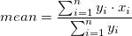

内容 |
Origin Version: 8.0 SR6
diststats iy:=col(3) percent:=col(4) quantile:=col(5);
| 表示 名 |
変数 名 |
I/O と データ型 |
デフォルト 値 |
説明 |
|---|---|---|---|---|
| 入力 | iy |
入力 XYRange |
<active> |
入力データを指定します |
| 積分領域のパーセント | percent |
入力 vector |
<unassigned> |
この変数は、quantile変数に関連しています。この変数にはベクターデータを割り当てます。ベクターデータの各値 k に対して、k番目のパーセンタイルが出力されます。 |
| ピークの方向 | dir |
入力 int |
1 |
このXファンクションは、入力データにピークがあることが前提です。Xファンクションがピーク位置を検出します。ユーザはピークの方法を指定する必要があります。
オプションリスト:
|
| ピークのインデックス | ipeak |
出力 int |
<unassigned> |
入力データ内のピークであるようなデータポイントのインデックスの出力を指定します。 |
| Xピーク | xpeak |
出力 double |
<unassigned> |
入力データ内のピークであるようなデータポイントのX値の出力を指定します。 |
| Yピーク | ypeak |
出力 double |
<unassigned> |
入力データ内のピークであるようなデータポイントのY値の出力を指定します。 |
| 平均 | mean |
出力 double |
<unassigned> |
入力データセットの平均の出力を指定します。その計算についてはアルゴリズムをご覧下さい。 |
| 中央値 | median |
出力 double |
<unassigned> |
入力データセットの平均の出力を指定します。その計算についてはアルゴリズムをご覧下さい。 |
| 四分位 | quantile |
出力 vector |
<unassigned> |
パーセント変数に割り当てられたベクターデータ内の値に対応する四分位の出力を指定します。 |
この関数は、XY範囲での分布統計を実行するのに使用できます。入力データのX値は、単調に増加し、Y値は0より大きくなります。それ以外の場合、Xファンクションを使うことはできません。
fname$ = system.path.program$ + "Samples\Curve Fitting\Gaussian.dat"; newbook; impasc; dataset aa={0,0.01,25,50,99.99,100}; col(4)=aa; diststats iy:=col(2) percent:=aa quantile:=col(5);
平均
重み付けした平均は次式で計算されます。:  ここで xi と yi は、入力データセットのi番目のデータポイントのXとYの値です。
メディアン
最初に、すべてのデータポイントのY値の合計が計算されます。
データに対してM=0.5*Sとなり、次の式が常に成立するものとします。
そして、求めている中央値はMedian=X[K]です。
四分位
絶対領域を計算するため、入力データ全体に対して補間が実行されます。percent 変数に割り当てられたベクターデータにある各値kに対して、関数は値m を探して、入力曲線の最初のX値からmまでを積分します。この区間の絶対領域は、全領域のk パーセントとなります。